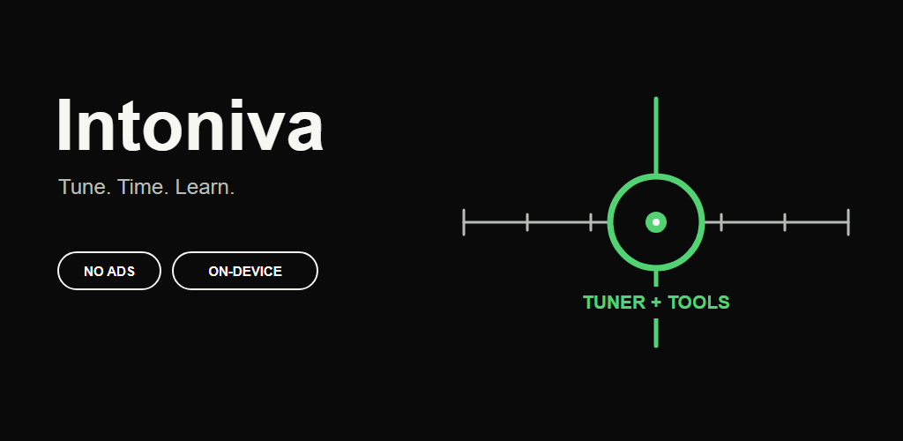

Tuner
Auto, Manual, and Chromatic modes with adjustable A4 reference and stable pitch tracking.
A fast instrument tuner, sample-accurate metronome, chord library, and ear trainer that keeps your audio on your device.

Auto, Manual, and Chromatic modes with adjustable A4 reference and stable pitch tracking.
20–400 BPM, meter, subdivision, accents, count-in, and clean foreground-only audio.
Canonical guitar and ukulele diagrams plus experimental on-device song analysis.
Chord recognition and twelve-note ear training with generated local audio.
Hands-free scrolling with visible Start, Stop, Hide, and speed controls.
Six- to nine-string guitars, four-string bass, ukulele, and a universal chromatic tuner.
No account, ads, analytics, trackers, cloud upload, or Internet permission.
Intoniva analyzes microphone samples in memory and discards them immediately. A song selected for chord analysis is decoded only on the device and is never copied or uploaded.